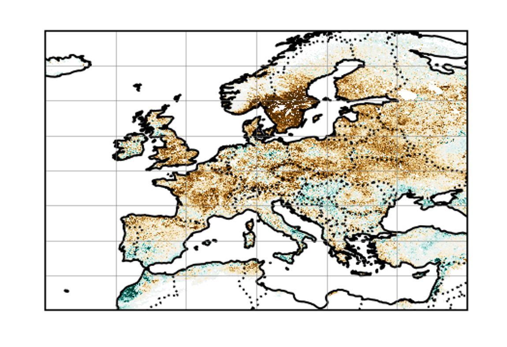

Climate Impacts

The challenge: Ultimately, climate variability and extreme weather events affect people and ecosystems through their impacts — on human health, energy systems, agriculture, and ecological functioning. Understanding and quantifying these impacts is essential for effective adaptation and risk management. However, linking climate variability and extremes to real-world impacts is scientifically challenging. Impacts depend not only on the physical hazard, but also on vulnerability and exposure, which are often independent of climate and can be difficult to quantify. Moreover, different types of variability and extremes (e.g., duration, intensity, spatial scale) can drive different kinds of impacts. Estimating those impacts can involve both statistical approaches and process-based models, each with strengths and limitations — and both requiring careful validation against observational or empirical impact data.
What we do: We investigate how climate variability and extreme events translate into impacts across a range of sectors, including:
- Energy systems – supply and demand under extreme conditions
- Ecosystem functioning and carbon uptake
- Crop failure
- Climate-biodiversity interactions
To do this, we combine climate modeling, statistical and causal inference methods, and sector-specific impact models (e.g., vegetation models). This allows us to estimate and attribute impacts associated with individual extreme events or broader patterns of climate variability. For example, we use worst-case climate simulations to assess the sensitivity of European ecosystems to concurrent heatwaves and droughts, helping to anticipate risks to carbon sinks under future climate conditions.
References:
Li, N., Sippel, S., Linscheid, N., Rödenbeck, C., Winkler, A.J., Reichstein, M., Mahecha, M.D. and Bastos, A., 2024. Enhanced global carbon cycle sensitivity to tropical temperature linked to internal climate variability. Science Advances, 10(39), p.eadl6155. https://doi.org/10.1126/sciadv.adl6155
Mahecha, M.D., Bastos, A., Bohn, F.J., Eisenhauer, N., Feilhauer, H., Hickler, T., Kalesse‐Los, H., Migliavacca, M., Otto, F.E.L., Peng, J. […], 2024. Biodiversity and climate extremes: Known interactions and research gaps. Earth’s Future, 12(6), p.e2023EF003963. https://doi.org/10.1029/2023EF003963
Pfleiderer, P., Jézéquel, A., Legrand, J., Legrix, N., Markantonis, I., Vignotto, E. and Yiou, P., 2021. Simulating compound weather extremes responsible for critical crop failure with stochastic weather generators. Earth System Dynamics, 12(1), pp.103-120. https://doi.org/10.5194/esd-12-103-2021
Rouges, E., Kretschmer, M. and Shepherd, T.G., 2024. On the link between weather regimes and energy shortfall during winter for 28 European countries. https://eartharxiv.org/repository/view/7589/